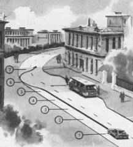

Подготовка к экстренному торможению
Хотя многие водители считают причиной ДТП неожиданность возникновения экстремальных условий, это не всегда так. Большинство типичных критических ситуаций можно предвидеть по прямым и косвенным признакам и упредить подготовительными действиями. В результате можно избежать, например, наезда на пешехода на остановке общественного транспорта, бокового столкновения на перекрестке или попутного столкновения при торможении “лидера” и многого другого.
У опытных водителей в арсенале мастерства имеется несколько приемов, соответствующих степени опасности, – от самых простейших (например, перенос стопы с педали подачи топлива на тормозную педаль, что в критической ситуации потребует примерно 0,1–0,2 с и сократит остановочный путь на 2–5 м), до самых сложных (например, торможение с боковым соскальзыванием и вращением автомобиля, которое позволит предельно сократить остановочный путь, при сохранении устойчивости и управляемости автомобиля).

Прогнозирование критической ситуации и подготовительные действия помогут вам снизить дефицит времени при экстренном торможении. Заранее прекращая дросселирование, перенося ногу на тормозную педаль, “выбирая” свободный ход педали, создавая начальное тормозное усилие, вы создаете себе запас надежности и безопасности.
Если для новичка ситуация с полностью или частично закрытым обзором при прочих нормальных условиях не вызывает тревожного состояния, то для опытного водителя это почти всегда сигнал к началу подготовительных действий, связанных с маневром по увеличению обзора или с подготовкой к торможению. Начиная действовать с опережением, опытный водитель создает себе запас безопасности и возможность спокойно, без излишней суеты, подготовиться к экстренным действиям с использованием самых эффективных приемов.
Последовательность действий можно представить себе как ступени лестницы.
Желательно преодолевать их поэтапно, но в случае крайней необходимости можно нарушить структуру действий и сразу приступить к экстренному торможению или скоростному маневру.
Однако действия при остром лимите времени требуют автоматизма навыков, и даже мелкие ошибки могут привести к потере устойчивости и управляемости. Поэтому чем ниже квалификация водителя и его профессиональный опыт, тем раньше и с большим опережением должны начаться действия, включающие подготовительные операции. Они не смогут повысить тормозной эффект, но создадут запас времени для выполнения основных приемов и исключат грубые ошибки, которые возникнут при интенсивном торможении.
На рисунке показана последовательность подготовительных (1–4), основных (5–6)и дополнительных (7) действий. При этом необходимо:
1. прекратить дросселирование (“закрыть газ”);
2. перенести ногу на тормозную педаль, не прилагая тормозного усилия;
3. начать подтормаживание, прилагая минимальное усилие;
4. при появлении опасности начать торможение, снижая скорость до оптимальной;
5. при возникновении критической ситуации перейти к экстренному ступенчатому торможению;
6. при невозможности остановки прекратить торможение, применить резкое дросселирование и экстренный маневр;
7. стабилизировать автомобиль опережающим рулением при возникновении ритмического заноса.
8. зависимости от особенностей ситуации можно начать активные действия, исключив подготовительные операции 1–4.